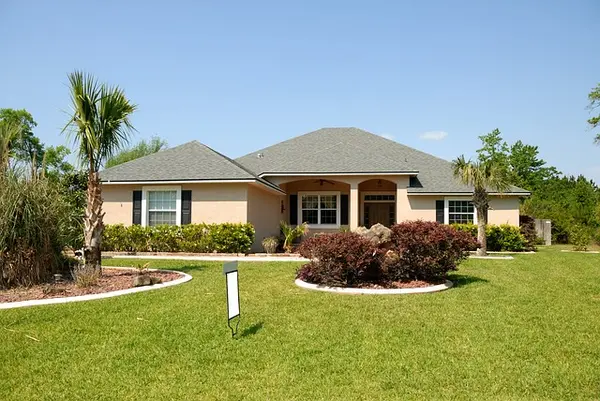

House Soft Washing & Exterior Walls
Protect your home's surfaces with our professional exterior wall cleaning. We use a safe, low-pressure soft wash process to eliminate organic growth, black mold, and environmental grime without damaging your stucco or siding.
High pressure can damage your home's surfaces. Our soft wash technique uses specialized cleaning solutions at low pressure to safely remove mold, algae, and stains from stucco, vinyl siding, and more.
